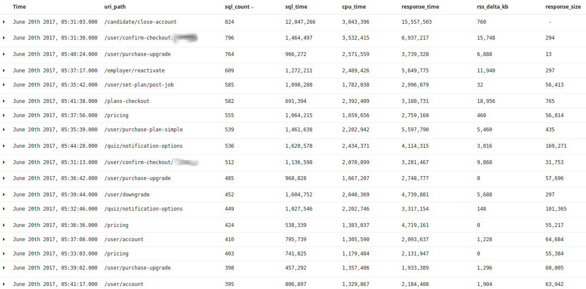

# Scalability, Reliability, and Performance at ZipRecruiter Hi I'm fREW --- # Agenda * Ask questions at any time; please remind me to repeat * General Terms * Strategies * Tactics * Specifically at ZR --- # Quick Caveat No right answers > "You can prematurely optimize maintainability, flexibility, security & > robustness just like you can performance." ‚Äî John Carmack --- # Defining our Terms --- ## Scalability - Resource Saturation * Using 1% of all server resources but cannot get more servers -- * 100x * CPU, Memory, Disk, Bandwidth * turnkey systems * ‚âà performance -- * Using 100% of all server resources but can get unlimited servers -- * Could scale infinitely * (beware spherical chickens, measure everything) -- * Strategies → Tactics * increase total resources → more web workers * decrease usage → stop being wasteful, use cperl --- ## Reliability - Error percentage -- * Strategies → Tactics * Robustness to errors → tests, timeouts, retries (IIS anecdote) * Be perfect → (just kidding, bad advice) --- ## Performance - Maximum rate -- * 1k req per second * 30k queries per second -- * Strategies → Tactics * Trade some perf for scalability → eg MapReduce * Don't do it * Do it, but don't do it again * Do it less * Do it later * Do it when they're not looking * Do it concurrently * Do it cheaper * ([source](http://www.brendangregg.com/methodology.html)) --- ## FYI... Scalability required for business growth! --- # @ ZipRecruiter --- ## Capacity Caches * 1 req/s; add cache; 1000 req/s * "NOW WE CAN SERVE 1000x THE USERS!" -- * ... time passes ... -- * ... cache gets blown ... -- * outage -- * more likely than above secenario because delta is less and growth is gradual -- * (hopefully) Balanced solution at Zip * Latency Caches (faster!) üëç * Capacity Caches (can even) üëé -- * ES example --- ## Timeouts / Reapers * "SendGrid is always fast!" -- * "DynamoDB is always fast!" -- * "S3 is always fast!" -- * EVERYTHING NEEDS A TIMEOUT -- * Reaper (+ MySQL) as a stopgap (h/t Hopkins) -- * [more](https://blog.afoolishmanifesto.com/posts/reap-slow-and-bloated-plack-workers/) [here](https://blog.afoolishmanifesto.com/posts/put-mysql-in-timeout/) [and here](https://blog.afoolishmanifesto.com/posts/dbi-caller-info/) --- ## Reaper Reports Normal: ``` Plack requests reaped (due to timeout) in the last 24 hours: 97 admin/email-blocks/check 87 upload/get_protected_upload 39 pixel/application_email_viewed_pixel 35 resume/viewed_resumes 26 admin/view/contact/contact_query 25 contact/candidates 17 contact/mark_viewed 13 contact/individual_response 13 reports/campaign_performance_data 11 upload/get_protected_upload_status 9 candidate/create_from_search 7 app/v1.1/applied_jobs 7 quiz/request_application 7 resume/zip_resume 6 admin/salesreporting/aerepport 6 app/v1.1/get_dismissals 5 candidate/suggested_jobs 5 job-alerts/v2/subscriber 5 job-search/v1/search 5 quiz/contact_info 5 user/options 4 contact/candidate_bulk_export_csv 4 user/dashboard 4 user/unrated_response_count 3 admin/close_candidate_account ``` --- ## Reaper Reports S3 Outage: ``` Plack requests reaped (due to timeout) in the last 24 hours: 85685 resume/zip_resume 13197 candidate/candidate_resume 11130 job/v1/apply 9672 quiz/contact_info 4618 resume/resume_preview 4144 app/v1.1/applied_jobs 3082 app/v1.1/resume 2523 resume/search_resumes 1819 app/v1.1/suggested_jobs 1375 candidate/about 1043 candidate/suggested_job_count 877 candidate/suggested_jobs 614 job-alerts/v1/subscribe 593 app/v1.1/get_dismissals 538 app/v1.1/contact 448 contact/individual_response 395 admin/customers 361 pixel/application_email_viewed_pixel 357 upload/get_protected_upload 267 user/company 213 contact/mark_viewed 195 job-search/v1/search 142 contact/contact_create 135 jobs/resume_submit 103 facebook/register 91 resume/viewed_resumes ``` --- ## Aurora * CPU bound vs IO bound * Easily add read followers * MySQL on AWS had hard max IO not far above our avg use -- * Capacity Cache Lulz --- ## Aurora --- ## Aurora --- ## RWSplitter * "FreakyFriday" (h/t Cogg, Deltac) --- ## Table Refactor * "quiz.description" * Log like data, etc --- ## Performance Monitoring * Graphite / Grafana -- * AccessLog -- * sql_count / sql_time -- * dynamodb_count / dynamodb_time * Helped reduce queries -- * [more](https://blog.afoolishmanifesto.com/posts/linux-clocks/) --- ## Memory Work * [Reaper now involved in memory usage](https://blog.afoolishmanifesto.com/posts/reap-slow-and-bloated-plack-workers/) * Iterate instead of pulling everything into memory * Not easy --- ## AccessLog in Action  --- ## nginx vs Apache * Buffering vs Streaming * Huge win * Mobile (60%) Ransom --- ## Bakeoff --- # What's Next @ ZipRecruiter? * Memory usage in perl is still very high * CPU usage is mysteriously high --- # The End * Check out the SRE book by The Borg ---